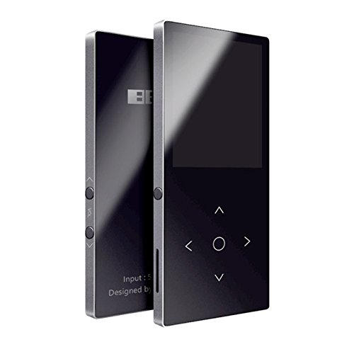

leoiemp3_1
features:
You can enjoy music by pairing with your Bluetooth headphone or your Bluetooth speaker.
Scientific design. Sensitive touch key, designed with 5 touch buttons. One button corresponds to one function, convenient operation.
Good exterior, high strength/shocking and crushing resistance, fashion and easy to use.
Support formats: MP3 (MP1, MP2, MP3), WMA, WAV, APE, FLAC. (Supports APE and FLAC with sampling rate 8 KHz- 48 KHz, Bit Rate: Fast/Normal compression 800 Kbps-1000Kbps.).